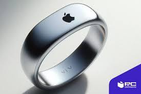

Descripción
Los anillos inteligentes tienen una función similar al de los relojes o pulseras inteligentes, pero son más pequeños y molestan menos. Es un anillo que destaca por su capacidad de monitorear la salud a través de datos biométricos como pueden ser la frecuencia cardiaca o el sueño por ejemplo. Lo he incluido ya que este dispositivo aporta beneficios para la interacción persona-ordenador ya que mediante gestos, sin la interacción directa de usar una pantalla táctil. También, es fácil y discreto a la hora de usarlo lo que hace que mejore la calidad de vida del usuario.
¿Cómo funciona un anillo inteligente?
Los anillos inteligentes funcionan de una manera muy simple, utilizan una combinación de sensores, sistemas de conectividad y software para que puedas utilizarlo.
- Sensores: Los anillos vienen equipados con un conjunto de sensores como acelerómetros, giroscopios, sensores de frecuencia cardíaca y sensores de oxígeno en sangre entre otros muchos. Gracias a ellos, se pueden recopilar datos sobre tu actividad física y tu salud.
- Hardware: Una vez se recopilan los datos, son procesados gracias al hardware interno del anillo. Con los cálculos que se realizan de manera interna y automática, se puede determinar tu frecuencia cardíaca, el número de pasos que has hecho en el día.
- Conectividad: Para que esa información no se pierda inútilmente, el anillo inteligente se conecta a otro dispositivo que pueda interpretar esos datos. Se suele utilizar conexiones Bluetooth o NFC.
- Software y aplicaciones: Los anillos suelen venir con una aplicación que puedas descargarte en tu móvil y ver toda la información que se recopila de ti.
Beneficios
- Pagos con NFC: Permite realizar pagos rápidos vinculándolo a plataformas como Apple Pay o Google Pay.
- Monitoreo de salud: Mide la frecuencia cardíaca, nivel de oxígeno en sangre y calorías quemadas.
- Seguridad: Funciona como autenticación de dos factores para proteger cuentas y desbloquear cerraduras electrónicas.
- Notificaciones del móvil: Recibe alertas de mensajes y llamadas mediante vibraciones.
- Monitorización del sueño: Mide la calidad del sueño y parámetros como la respiración.
Evolución
Desde sus primeros modelos, los anillos inteligentes han evolucionado mucho. En 2013, solo tenían funciones básicas como notificaciones y alertas por vibración. Entre 2015 y 2018, comenzaron a incorporar sensores para monitorear el sueño, el ritmo cardíaco y otros factores de salud, destacando dispositivos como el Oura Ring. En 2018, se agregaron las funcionalidades de autenticación de seguridad y pagos NFC. Estos anillos se volvieron populares en 2020 cuando mejoraron su diseño, duración de la batería y capacidades para monitorear la salud. Los anillos inteligentes más avanzados ahora incorporan inteligencia artificial y permiten el control de dispositivos, con un enfoque creciente en el bienestar mental y el control del estrés. En el futuro, se espera que estos dispositivos presenten más innovaciones en el campo del control por gestos.
